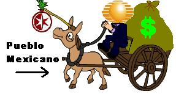

Televisa
 De: La Frikipedia, la enciclopedia extremadamente seria.
De: La Frikipedia, la enciclopedia extremadamente seria.
| De la serie empresas malignas:
|
| Televasca
|
|
|
| Perteneciente al grupo:
|
Nacos
|
| Se dedica a:
|
Televisión para nacos
|
| País de origen:
|
México
|
| Año de fundación:
|
1890 y algo
|
| Super Presidente:
|
Emilio Azcarraga Jean
Egresado del Teletón, no griten junto a él
|
| Nivel de maldad:
|
Mucha
|
| Empresas absorbidas:
|
Varios canales locales, no tienen dignidad
|
| Número de empleados:
|
Por mi se pueden morir todos
|
| Atentados contra la humanidad
|
Telenovelas, que es un género de más y aparte es inextinguible por ellos (una de las que peor se burla de tu intelecto y de la que más daña los sentidos: "La rosa de Guadalupe"), El MongolónTeletón, Pequeños Gigantes, Bailando por un sueño humedo, Cantando por un sueño, Cagando por un sueño, Follando por un sueño (también llamado Big Brother VIP)... etc, etc,Pero arriba de todo, GAYCHI.
|
| ¿Se aconseja trabajar aquí?
|
depende de como este tu dignidad
|
| ¿Se recomienda el boicot?
|
¡Lo antes posible por favor!
|
| Cantidad de denuncias:
|
Desafortunadamente la perdida del cerebro no se considera delito
|
| Sitio web:
|
[(Por respeto a tu salud mental no la mencionare) Página oficial de Televasca]
|
Televisa es un centro de Poder Televisivo que surge en los "50" Mejor conocido como: El imperio del Mal con el fin de lavar cerebros, dedicado a la creación de enjuagues mentales para la población taquera y nopalera de México. Es una televisora de 3 pesos con un oscuro y ambicioso objetivo político de cierto partido Verde Blanco y Colorao de México. Es el origen de toda la programación de una televisora llamada "TV Azteca". De su maligno dueño, Emilio Azcárraga Jean (que padece de retraso mental), hijo de Emilio Azcárraga Milmo (el que dijo que su televisora hacía 'televisión para jodidos'), se presume que es el resultado de una pokemonización de cruza de burra, Caballo y un Cuyo de plástico Mi Alegria con implantes. Emilito, para los cuates, tiene planes de apoderarse de todas las televisiones del mundo, difuendiendo ondas cerebrales para acabar con las mentes apagando todos los cerebros, su contenido es altamente toxico que produce vomitos y diarreas extremas excepto una actriz buenota (antojable claro) Barbara Mori, increiblemente es vista esta canal de televisión a pesar de programación mala que incluye: 4 horas al día del Chapulin colorado y telenovelas donde la misma historia se repite cada 6 meses y en diferentes horarios, todas sus viejas, perdón actrices se distinguen por estar operadas con la misma nariz, hace tiempo adoptaron a un adorador de Francisco Frasco llamado Felipe Calderón.

esta fue la reacción de 2 personajes de mlp al ver esta mierda
Amenazas contra la humanidad
Datos Interesantes
- El diseño de su logo es la impresión en resina de un seno de la hija del dueño.
- Hubo un reality show llamado "El Bar" donde un montón de mujeres ebrias tratan de seducir gorilas y no hacen absolutamente nada más. Este experimento fue aprobado por Green Peace.
- Cuentan con el peor programa de todo el mundo, este llamado Muevete conducido por una cuarentona inquieta y un wey operado. Hacen ridiculeses, concursan gordas y aparte el 99.9% que se relaciona con esta emision es de la zona norte del DF
- Muchos creían que el peor programa era el de Muevete, pero despues sacaron otra mierda parecida donde hacen estupideces mas extremas, conducido por Omar Enano, una flaca celulitica metida siempre en el chisme, una oxigenada y varios imbeciles mas (un payasito de la calle, una naca, un naco y mas nacos inferiores), aplicando exactamente la misma fórmula del norte (Multimedios) del programa de Mayito de programación tan rellenadora, hasta con un cómico norteño.
- Este canal existe con el puro fin de lavarte el cerebro con estupidas telenovelas en las que los personajes tratan de imitar exactamente al mexicano promedio, pero agregándole las conductas que ellos quieren que tomes (la utilidad principal del género de la telenovela), programas como "HOY", entre otras cosas para que estes mas sonso que Misa Amane y seas mas chismoso que Paty Chapoy y asi no tengas tiempo para hacer cosas productivas.
- Buscan distraerte los fines de semana, entre semana en la tarde, en vacaciones, poco antes de la madrugada del domingo/lunes o cuando sea que pueda un mexicano o cualquier otro individuo tener tiempo libre, con películas buenas y famosas que te dejan picado o programas tan morbosos que no puede haber algo más morboso en la humanidad en ese momento para que no aproveches el tiempo libre ahora que lo tienes y no puedas pensar en algo genial para solucionar tu vida tan jodida (ej. cómo poner Terminator 1 2 y 3, Mentiras Verdaderas, El Sexto Día, etc. desde la mañana del sábado en temporada escolar nacional de exámenes cuando Schwarzenegger esté en el ojo del huracán del paparazzi por haberla cagado en algo y así te hagas más burro por reprobar y fracasar en tu vida, etc., todo ésto le conviene a Televisa). Los españoles lo entenderán con lo que fue La Sexta cuando estuvo en los tentáculos de Televisa.
Plan de conquista mundial
Es su extenso plan, esta empresa ha bombardeado a las masas con telenovelas de muy bajo nivel cultural, que promueven la estupidez y el lenguaje estúpido; Ademas de programas de chismes con homosexuales de conductores, que solo promueven la perdida de la privacidad de los artistas y la perdida de vida propia, por parte de quien los ve.
Entre sus grupos de choque y proyectos lava cerebros están:
- RBD (rebelde) (el mas poderoso que incluso ya entro a Brasil)inició con una telenovela de 666,666,666.666 episodios de que luego surguio esta horrible banda, a la cual luego le direron su propia serie(que ingeniosos)llamada "RBD la familia" que duro 2 temporadas de 500 episodios cada una (esto merece una discusión: RBD es un spin-off de una pedorreica idea de Cris Morena llamada Rebelde Way - ¿Esto significa que la idea de dominar al mundo es argentina?)
- Siempre en Domingo (Base de toda la maldad de la "empresa")
- En familia con chabelo (Haga el ridículo y gánese pura macana)
- Chespirito y su súper cultivador e ingenioso programa el Chavo del ocho el cual goza de gran popularidad en toda "la timo america" especialmente en Brasil donde lo consideran un dios autóctono, cosa que demuestra que el único al que es más fácil de lavar el cerebro que un mexicano es a un brasileiro.
Hipótesis de conquista
Después de mucha observación y bochornosos estudios, científicos de la masa, han llegado a la deducción, de que televisa crea programas basura con el propósito de volver estúpida a la gente ¿MAS?, empleando la hora del taco, como horario de ataque con cosas cómo hacer wey y al más puro estilo "elegante", usar la milenaria técnica de vender espejitos. El propósito de esto es afectar al televidente, al enviarle imágenes subliminales mientras come, algunos científicos de la masa fueron víctimas de estas imágenes subliminales algunos los pudimos salvar y a otros no pobres amigos mios, se observo que, la gente no conversara durante este tiempo, ni siquiera con la boca llena.
Estas imágenes afectan el centro del lenguaje en el cerebro, los centros de razón, del sentido común, y el centro de la ciudad; después de analizar los efectos de estas imágenes se encontraron estas modificaciones:
- Querer ver televisa
- Apoyar a Enrique Peña Nieto (El idiota mas grande del mundo)
- Hacer q a los jovenes les lave el cerebro su profesor de filosofia (contratado por televisa)
- Tomar droga-cola
- Pensar en sexo
- Querer sexo
- Querer sexo con niñas
- Tenerle ganas a una gorda gorilona con nariz de gorila cómo la Galilea (la exóticamente favorita por desgracia de algún ejecutivo irremovible con el peor gusto)
- Querer emprender el "Sueño Americano" y verlo cómo "la única solución"
- Querer ver Hoy con todo y el salvado de las calles de Raúl Araiza
- Querer donar al Teletón
- Perdida de la inteligencia
- Perdida de la vergüenza (al querer ser humillado en cadena nacional, en un programa de mierda)
- Odiar al Peje (siiii claro si hasta el peje es mas amarillista que televisa)
- Querer ser Rebelde
- Conocer todo lo positivo del Verde, Nueva Alianza, y conocer todo lo malo del resto de partidos (vía el "Teacher", la Momia Ayala, Carlos "El Criminal Yucateco" Loret de Mola...).
- Perdida de la generación de juicios propios (se adoptan los juicios que digan en la televisión)
- Querer ser Rosa de Guadalupe, los pasan cómo que fueran personas a las que se debe aceptar así cómo si nada)
- Perdida del interés en la vida propia
- Adentrarte al mundo de Televisa (pochos) con datos falseados sobre cualquier tópico
- Interés por los secretos más obscuros de los artistas (Los pendejos que salen en la tele)
- Querer ser Fresa (una cosa rara que así le llaman los televisos, que obvio no se refiere a la tribu urbana)
- Querer ser naco
- Querer ser cómo los gringos
- amar el reggeton, el regional mexicano, la banda, al PRI...
- ...Y decir que fue sin querer queriendo
- Intentar plagiar a buenos artistas, Buenos canales de television, etc.
- Querer seguir siendo altamente "educado" por la televisora
- Ver telenovelas donde repiten las cosas una y otra vez a tal grado que te sepas los dialogos de memoria y adivinarlos en la proxima telenovela.
- Estar tan enbobado en ver esas putadas que pierdes tu vida social.
- El cerebro se inflama a tal punto que explota sin que te des cuenta!!!saliendose a traves de tu sudor o demas liquidos de tu cuerpo.
Consecuensias por grupos de edad, sexo, clase social
Si eres chavala (jovencita):
- Te traumas al ver a las viejas tan buenorras y que tu tengas cuerpo de chorizo mal empaquetado; asi te fijas mas en eso que en tus estudios para que al final termines de sirvienta de algun productor de Televisa.
- Intentaras de manera inconsiente imitar las actitudes inmaduras de las actrices como lo son: ponerte hasta la polla de maquillaje, bailar encima de mesas, mezclar el ingles con el español de una forma tan vil, querer ser pendejamente "popular" a costa de tu reputación, etc.
- Te quejas de que tu madre y abuela sean chismosas, distraidas, lelas pero vez Televisa al igual que ellas asi que unos años mas y alguien se quejara de ti.
Si eres una brujer mujer madura:
- Seras tan fiel a los horoscopos que te valdrá un comino tus esfuerzos para ser mejor persona ¿para que? ¿si Mario Vanuchi tiene la razon?.
- Estarás tan embobada a las telenovelas tan baratas que no prestaras atencion a tus hijos para luego regañarlos de cosas que segun tu no te contaron ¿me equivoco?.
- Harás todo TODO lo que te digan conductores y demás aquelarre de manera inconsciente por los subliminales que te han mandado en Hoy.
- Deseas tener el cuerpo de Ninel, Jacky Bracamontes y demás con todas las ganas del mundo; pero estas echada como marrana en el sillón tragando lo que aprendiste en el "Al Sabor del Chef" y diciendo "sí así de gordas y feas están las de Laura y La Rosa de Guadalupe, será por que es algo normal".
Si eres un chaval joven (con pito pues!!!):
Bueno lo mas seguro es que veas esta m#***a a la hora de la comida por que tu santa madre lo pone o cuando ves los resúmenes de deportes por que fuera de unos cuantos, los de resúmenes de deportes de TV Azteca son unos ineptos nacos ¿verdad?; aunque por desgracia mas de tu especie caen en esta mortal y maldita trampa. Veamos los efectos:
- Te vuelves un patán de lo peor pues constantemente muestran a bellas mujeres en bikini y de cuerpo tipo Venus (de la mitologia, ¿queda claro?) asi que de seguro piensas "Soy el mejor merezco eso y mas" por que a las feitas ya ni las tratas y sólo buscas todo el tiempo tener a la/s más buena/s de forma violenta y te das cuenta que tu adicción al sexo ha sido construida ¿ME EQUIVOCO?.
LO ANTERIOR TAMBIÉN VA PARA HOMBRES MADUROS.
 Representacion del pueblo mexicano con respecto a televisa
Véase también
- TV Azteca, la versión todavía más maligna de Televisa
- Naco, su principal fuente de ingresos
Enlaces externos
 Mēxihco Mēxihco
|
Estados Libres y Soberanos Pero Igual Subordinados
Ciudades, Localidades y Ejidos
El Mundo del Espectáculo, la Farándula, Luminarias y otras Vergüenzas
Tribus Urbanas Nacionales
Historia y su Rara Cultura
|
Autor(es):
- Fordus
- Barbadeus Motsand
- Roms
- Mgr33r
- El charro
- Omarzuko
- Pollito kn
- Gustavo Adolfo
- Warandman
- Cibercrank
Frikipedia 2005-2016, Licencia
GFDL 1.2 - Extraído por FrikiLeaks